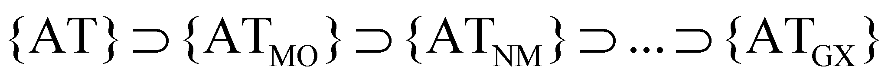
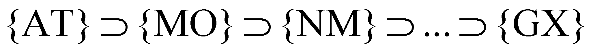
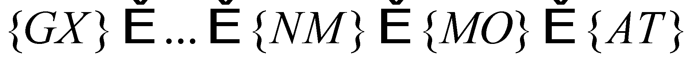
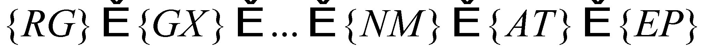
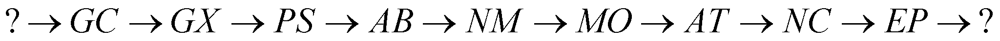
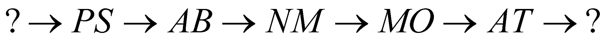
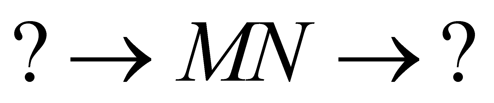

|
|
|
In order to establish a hierarchy relation on the set of structure levels of NAMS, we may use the inclusion relations of sets belonging to the constitutive parts. According to the knowledge gathered so far, it is known that all the systems with the structure level over AT level (such as MO, NM, AB, PS, etc.) are made-up from AT systems, therefore, it might be said that:
{AT}set is made-up from two complementary subsets: the set of the atoms bound in molecules or other types of atomic systems (e.g.: metals) and the set of the free atoms (unbound in any system). The result is that the set of the atoms from the composition of the molecule set {ATMO}is included in {AT} set (see fig.1.2.1).
{MO}set is also made-up from two subsets: the set of molecules arisen in natural media {MOMN} and the free molecules set, resulting that the set of molecules which make-up {MOMN}is included in {MO}, so on.
Fig. 1.2.1
Taking into consideration the figure 1.2.1, one may notice that there is an inclusions chain of the abiotic systems set, chain which may be represented by using the syntax of the sets theory, as it follows:
 (1.2.1)
which means that the total atoms set includes the set of the atoms embedded in molecules, which in its turn, is made-up from the set of atoms from the natural media, etc.
Under a simplified form, the relation 1.2.1 may be written as:
 (1.2.2)
or:
 (1.2.3)
namely, the set of atoms from the galaxyes’ composition is finally included in the total set of the atoms from the universe (with their intermediate organization levels, they are also subsets of the atoms set. But, since it is known that the atoms are systems made-up from EP, therefore, {AT}set is also included in the more extended {EP}set, that is the set of all the electric particles from the universe. Generalizing the inclusion relations 1.2.3 across the entire NAMS hierarchy range mentioned in par. 1.1, it may be written that:
 (1.2.4)
which means that the set of the electric particles which are found in the composition of the galaxy clusters is included in the total set of EP from the universe, but obviously, there is a set of EP which do not belong to any of their structure forms (free particles from the space between the galactic clusters).
Definition 1.2.1: The set of the systems with a more simple structure, whose elements are at the origin of all the systems with a more complex structure, is called the generating set.
For example, according to the relation 1.2.4, a generating set is {EP} set, because EP systems are found in the composition of all the material systems with a more complex structure, including in the stars core, where even the atomic kernels are dissociated. As for the biosystems from the Earth, it is also a generating set which might be considered as the set of all the living cells from the planet (either they are free, as bacteria, or bound, as the tissue cells), but also the set of the atoms found in the peripheral media of the planet, from which all the constitutive parts of a bio-system (including the cellular one) will arise.
Any subset belonging to a set is characterized by the fact that its constitutive elements have at least one distinctive feature as compared to the elements of the generating set (that is the set where the subset is included). In case of NAMS, this kind of feature is for instance, the spatial location of the elements, the atoms of a molecule being confined in a limited space, that is the molecular space. The group of properties which define a certain subset from series 1.2.4. shall be (temporarily) called as the formation criteria of the subset (system) and it is the main property of the organization level notion of that particular system. The result is that a system with a certain organization level implies the existence of some systems with an inferior organization degree. This chain implication (propositional) may be written in an abbreviated form by using the implication operator [→]:
 (1.2.5)
Relation 1.2.5 may be read as it follows:
“The existence of GC-type systems implies the existence (as subsystems) of GX-type subsystems, which also implies the existence of PS-type systems, etc.”
But the same relation may be also read as: “EP systems are the subsystems for NC, which in their turn, are subsystems for AT”, so on.
One may notice that the question marks delimit the current cognition limits in the abiotic field (we are talking about the certain, experimental cognition which is unanimously recognized by all the scientists). If we shall mark the same series of the systemic implications (organizational) of NAMS according to the knowledge degree at the end of 19-th century, we shall get:
 (1.2.6)
(by mentioning that the only PS system which was known was our planetary system), and in antiquity, the chain of the organizational implications was only:
 (1.2.7)
the four “fundamental elements”: earth, water, air and fire.
Copyright © 2006-2011 Aurel Rusu. All rights reserved.